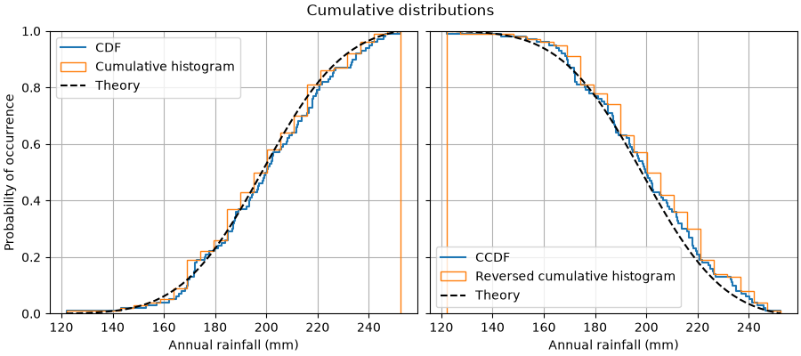

Note
Go to the end to download the full example code.
Cumulative distributions#
This example shows how to plot the empirical cumulative distribution function (ECDF) of a sample. We also show the theoretical CDF.
In engineering, ECDFs are sometimes called "non-exceedance" curves: the y-value for a given x-value gives probability that an observation from the sample is below that x-value. For example, the value of 220 on the x-axis corresponds to about 0.80 on the y-axis, so there is an 80% chance that an observation in the sample does not exceed 220. Conversely, the empirical complementary cumulative distribution function (the ECCDF, or "exceedance" curve) shows the probability y that an observation from the sample is above a value x.
A direct method to plot ECDFs is Axes.ecdf. Passing complementary=True
results in an ECCDF instead.
Alternatively, one can use ax.hist(data, density=True, cumulative=True) to
first bin the data, as if plotting a histogram, and then compute and plot the
cumulative sums of the frequencies of entries in each bin. Here, to plot the
ECCDF, pass cumulative=-1. Note that this approach results in an
approximation of the E(C)CDF, whereas Axes.ecdf is exact.
import matplotlib.pyplot as plt
import numpy as np
np.random.seed(19680801)
mu = 200
sigma = 25
n_bins = 25
data = np.random.normal(mu, sigma, size=100)
fig = plt.figure(figsize=(9, 4), layout="constrained")
axs = fig.subplots(1, 2, sharex=True, sharey=True)
# Cumulative distributions.
axs[0].ecdf(data, label="CDF")
n, bins, patches = axs[0].hist(data, n_bins, density=True, histtype="step",
cumulative=True, label="Cumulative histogram")
x = np.linspace(data.min(), data.max())
y = ((1 / (np.sqrt(2 * np.pi) * sigma)) *
np.exp(-0.5 * (1 / sigma * (x - mu))**2))
y = y.cumsum()
y /= y[-1]
axs[0].plot(x, y, "k--", linewidth=1.5, label="Theory")
# Complementary cumulative distributions.
axs[1].ecdf(data, complementary=True, label="CCDF")
axs[1].hist(data, bins=bins, density=True, histtype="step", cumulative=-1,
label="Reversed cumulative histogram")
axs[1].plot(x, 1 - y, "k--", linewidth=1.5, label="Theory")
# Label the figure.
fig.suptitle("Cumulative distributions")
for ax in axs:
ax.grid(True)
ax.legend()
ax.set_xlabel("Annual rainfall (mm)")
ax.set_ylabel("Probability of occurrence")
ax.label_outer()
plt.show()

References
The use of the following functions, methods, classes and modules is shown in this example: